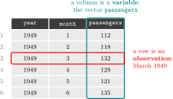

# List all objects in the environment
ls()[1] "pandoc_dir" "quarto_bin_path"# Remove all objects from the environment
rm(list = ls())
# Verify the change
ls()character(0)Find the slides here
# Check current working directory
getwd()
# Set a new working directory.
setwd("C:/Users/YourName/Desktop/AE_2026")
# Verify the change
getwd()
# List files in the working directory
dir()# List all objects in the environment
ls()[1] "pandoc_dir" "quarto_bin_path"# Remove all objects from the environment
rm(list = ls())
# Verify the change
ls()character(0)# Create object "n"
n <- 100
# Print the object in the console:
n[1] 100# generate vector "age":
age <- sample(18:65, n, replace = TRUE)# Visualize
age # Print object in console [1] 22 58 23 36 48 30 62 52 23 42 18 21 18 32 26 30 48 26 42 53 40 19 25 41 31
[26] 35 30 33 27 26 45 23 53 32 61 50 21 23 40 64 28 23 27 22 64 53 19 62 34 21
[51] 57 38 21 62 48 18 64 61 37 41 42 25 23 57 35 23 23 30 55 63 53 36 53 32 43
[76] 53 49 49 18 42 23 22 56 28 62 36 54 64 65 37 51 47 50 31 53 53 40 45 65 53str(age) # Object type, size int [1:100] 22 58 23 36 48 30 62 52 23 42 ...class(age) # Object type[1] "integer"dim(age)NULLls() # List all objects[1] "age" "n" AirPassengers is a dataset that comes built into R: the monthly totals of international airline passengers, in thousands, from January 1949 to December 1960. Stores information in three vectors:
# Three vectors with one value per month
passengers <- as.numeric(AirPassengers)
year <- as.numeric(floor(time(AirPassengers)))
month <- as.numeric(cycle(AirPassengers))
length(passengers) # 144[1] 144# Access elements of a vector
passengers[1] # first element: 112[1] 112passengers[1:3] # elements 1 to 3: 112 118 132[1] 112 118 132passengers[c(1, 144)] # first and last: 112 432[1] 112 432A dataframe is a two-dimensional object that stores data as a table, with rows and columns:

Every column of a dataframe is a vector, and all columns have the same length. So if we have several vectors of the same length, where position 1 in each vector refers to the same observation, position 2 to the next one, and so on, we can put them side by side as the columns of a dataframe with data.frame(). The three vectors year, month and passengers each have 144 elements, one per month, so together they form a dataframe with 144 rows and 3 columns:
# Create a dataset from the three vectors
df_air <- data.frame(year, month, passengers)
dim(df_air) # 144 rows, 3 columns[1] 144 3head(df_air) year month passengers
1 1949 1 112
2 1949 2 118
3 1949 3 132
4 1949 4 129
5 1949 5 121
6 1949 6 135A function takes one or more objects as input, performs a task, and returns an output. We have already used several, such as sample(), length() and data.frame(). We can also write our own:
ls()[1] "age" "df_air" "month" "n" "passengers"
[6] "year" # Define the function "square()"
square <- function(x) { return(x^2) }
# Run function on object, store as "result"
result <- square(n)
# Print the result in the console
print(result)[1] 10000ls()[1] "age" "df_air" "month" "n" "passengers"
[6] "result" "square" "year" A package is a collection of functions, data and documentation written by other R users, which extends what R can do. R comes with a basic set of functions (such as mean() or data.frame()), and packages add new ones for specific tasks. For example, dplyr adds functions to manipulate dataframes and ggplot2 adds functions to draw graphs. Thousands of packages are freely available on CRAN, the official R package repository.
Using a package takes two steps. First, install it, which downloads it to your computer. This is done only once per computer:
# Install once (downloads from CRAN)
install.packages("dplyr")Second, load it with library(), which makes its functions available in your current R session. This has to be done every time you start R, so the library() lines usually go at the top of the script:
# Load every time you start R
library(dplyr)Warning: package 'dplyr' was built under R version 4.5.2
Attaching package: 'dplyr'The following objects are masked from 'package:stats':
filter, lagThe following objects are masked from 'package:base':
intersect, setdiff, setequal, unionBefore running any analysis, take a first look at the data: how large it is, which variables it contains, what values they take, and whether anything is missing. This helps to spot mistakes early, for example a merge that dropped observations or a variable stored in the wrong units.
We use df_air, the monthly passenger dataset created above, as an example.
dim() returns the number of rows and columns, names() the variable names, and str() the type of each variable together with its first values:
dim(df_air)[1] 144 3names(df_air)[1] "year" "month" "passengers"str(df_air)'data.frame': 144 obs. of 3 variables:
$ year : num 1949 1949 1949 1949 1949 ...
$ month : num 1 2 3 4 5 6 7 8 9 10 ...
$ passengers: num 112 118 132 129 121 135 148 148 136 119 ...head(), used above, prints the first six rows, and tail() prints the last six:
tail(df_air) year month passengers
139 1960 7 622
140 1960 8 606
141 1960 9 508
142 1960 10 461
143 1960 11 390
144 1960 12 432summary() returns the minimum, the quartiles, the mean and the maximum of a numerical variable:
summary(df_air$passengers) Min. 1st Qu. Median Mean 3rd Qu. Max.
104.0 180.0 265.5 280.3 360.5 622.0 Applied to a whole dataframe, it summarises every variable at once:
summary(df_air) year month passengers
Min. :1949 Min. : 1.00 Min. :104.0
1st Qu.:1952 1st Qu.: 3.75 1st Qu.:180.0
Median :1954 Median : 6.50 Median :265.5
Mean :1954 Mean : 6.50 Mean :280.3
3rd Qu.:1957 3rd Qu.: 9.25 3rd Qu.:360.5
Max. :1960 Max. :12.00 Max. :622.0 Individual statistics have their own functions, such as mean(), median(), var() (variance) and sd() (standard deviation):
mean(df_air$passengers)[1] 280.2986sd(df_air$passengers)[1] 119.9663table() counts how many observations take each value of a variable. It is most useful for categorical variables. Here it confirms that every year has exactly 12 monthly observations:
table(df_air$year)
1949 1950 1951 1952 1953 1954 1955 1956 1957 1958 1959 1960
12 12 12 12 12 12 12 12 12 12 12 12 Square brackets select parts of a dataframe by position, as dataframe[rows, columns]. Leaving the rows or the columns empty selects all of them. The $ sign selects a single variable by its name.
# Accessing data through row/column indexes
df_air[1:3,] # Rows 1 to 3, all columns. year month passengers
1 1949 1 112
2 1949 2 118
3 1949 3 132df_air[c(2,5),c(1,3)] # Rows 2 and 5, Columns 1 and 3. year passengers
2 1949 118
5 1949 121head(df_air[,c(1,3)]) # All rows, Columns 1 and 3 (first six rows shown). year passengers
1 1949 112
2 1949 118
3 1949 132
4 1949 129
5 1949 121
6 1949 135# Access the 'passengers' variable.
df_air$passengers [1] 112 118 132 129 121 135 148 148 136 119 104 118 115 126 141 135 125 149
[19] 170 170 158 133 114 140 145 150 178 163 172 178 199 199 184 162 146 166
[37] 171 180 193 181 183 218 230 242 209 191 172 194 196 196 236 235 229 243
[55] 264 272 237 211 180 201 204 188 235 227 234 264 302 293 259 229 203 229
[73] 242 233 267 269 270 315 364 347 312 274 237 278 284 277 317 313 318 374
[91] 413 405 355 306 271 306 315 301 356 348 355 422 465 467 404 347 305 336
[109] 340 318 362 348 363 435 491 505 404 359 310 337 360 342 406 396 420 472
[127] 548 559 463 407 362 405 417 391 419 461 472 535 622 606 508 461 390 432Generate a new dataset df_air_first_9_rows by selecting the first 9 observations/rows of the dataset:
df_air_first_9_rows <- df_air[1:9,]
ls()[1] "age" "df_air" "df_air_first_9_rows"
[4] "month" "n" "passengers"
[7] "result" "square" "year" A new variable is created by assigning a vector to a name that does not yet exist in the dataframe, with dataframe$new_variable <- .... The vector is usually computed from existing variables. passengers is measured in thousands, so dividing it by 1000 gives the number of passengers in millions:
df_air$passengers_millions <- df_air$passengers / 1000
head(df_air) year month passengers passengers_millions
1 1949 1 112 0.112
2 1949 2 118 0.118
3 1949 3 132 0.132
4 1949 4 129 0.129
5 1949 5 121 0.121
6 1949 6 135 0.135A logical condition compares values and returns TRUE or FALSE for each element of a vector. The most common operators are:
| Operator | Meaning |
|---|---|
== |
equal to |
!= |
not equal to |
>, >= |
greater than, greater than or equal to |
<, <= |
less than, less than or equal to |
& |
and: both conditions are true |
| |
or: at least one condition is true |
%in% |
the value is one of a set of values |
The following condition is TRUE for the months between 1950 and 1959. table() counts how many observations satisfy it:
# Logical condition vector
index_fifties <- (df_air$year >= 1950) & (df_air$year <= 1959)
table(index_fifties)index_fifties
FALSE TRUE
24 120 ifelse() returns one value where a condition is TRUE and another where it is FALSE, which makes it useful for creating categorical variables. We create two categorical variables: season separates the summer months from the rest of the year, and traffic separates the months with more passengers than the median month from the others:
df_air$season <- ifelse(df_air$month %in% 6:8, "Summer", "Rest of year")
df_air$traffic <- ifelse(df_air$passengers > median(df_air$passengers), "High", "Low")
table(df_air$season)
Rest of year Summer
108 36 With two variables, table() returns a two-way table (or cross-table), which counts the observations for each combination of categories:
table(df_air$season, df_air$traffic)
High Low
Rest of year 51 57
Summer 21 15prop.table() turns the counts into shares. With margin = 1, the shares add up to one within each row:
prop.table(table(df_air$season, df_air$traffic), margin = 1)
High Low
Rest of year 0.4722222 0.5277778
Summer 0.5833333 0.4166667Generate a new dataset df_air_fifties by selecting the observations/rows that match the condition in index_fifties:
df_air_fifties <- df_air[index_fifties, ]
dim(df_air_fifties)[1] 120 6In this section we work with a second dataset, longley, and later combine it with df_air.
longleylongley is a dataset that comes built into R, with yearly macroeconomic data for the United States from 1947 to 1962. Each row is one year, and each column is one of the following seven variables:
| Variable | Description | Units |
|---|---|---|
GNP.deflator |
GNP implicit price deflator, a measure of the price level | index, 1954 = 100 |
GNP |
Gross National Product | billions of current US dollars |
Unemployed |
number of unemployed people | tens of thousands of people |
Armed.Forces |
number of people in the armed forces | tens of thousands of people |
Population |
non-institutionalized population aged 14 or older | millions of people |
Year |
the year of the observation | calendar year |
Employed |
number of employed people | millions of people |
For example, in 1947 the value of Unemployed is 235.6, which means about 2.36 million unemployed people, and the value of Employed is 60.323, which means about 60.3 million employed people.
# longley: US macroeconomic data, one row per year (1947-1962)
data(longley)
class(longley) [1] "data.frame"longley data features 7 variables, 16 observations:
dim(longley)[1] 16 7head(longley) GNP.deflator GNP Unemployed Armed.Forces Population Year Employed
1947 83.0 234.289 235.6 159.0 107.608 1947 60.323
1948 88.5 259.426 232.5 145.6 108.632 1948 61.122
1949 88.2 258.054 368.2 161.6 109.773 1949 60.171
1950 89.5 284.599 335.1 165.0 110.929 1950 61.187
1951 96.2 328.975 209.9 309.9 112.075 1951 63.221
1952 98.1 346.999 193.2 359.4 113.270 1952 63.639dplyrThe old-fashioned way
longley$employment_share <- longley$Employed/longley$PopulationThe dplyr way:
longley <- longley |>
mutate(employment_share = Employed / Population,
unemployment_share = (Unemployed / 100) / Population,
population_growth = (Population - lag(Population)) / lag(Population))head(longley) GNP.deflator GNP Unemployed Armed.Forces Population Year Employed
1947 83.0 234.289 235.6 159.0 107.608 1947 60.323
1948 88.5 259.426 232.5 145.6 108.632 1948 61.122
1949 88.2 258.054 368.2 161.6 109.773 1949 60.171
1950 89.5 284.599 335.1 165.0 110.929 1950 61.187
1951 96.2 328.975 209.9 309.9 112.075 1951 63.221
1952 98.1 346.999 193.2 359.4 113.270 1952 63.639
employment_share unemployment_share population_growth
1947 0.5605810 0.02189428 NA
1948 0.5626519 0.02140253 0.009516021
1949 0.5481403 0.03354195 0.010503351
1950 0.5515871 0.03020851 0.010530823
1951 0.5640955 0.01872853 0.010330932
1952 0.5618346 0.01705659 0.010662503Suppose we now want to combine the information in df_air with the information in longley. There is a problem: df_air is a monthly dataset, while longley is annual. Before we can combine them, both datasets need to have the same frequency, so we first aggregate df_air from monthly to annual data.
head(df_air) year month passengers passengers_millions season traffic
1 1949 1 112 0.112 Rest of year Low
2 1949 2 118 0.118 Rest of year Low
3 1949 3 132 0.132 Rest of year Low
4 1949 4 129 0.129 Rest of year Low
5 1949 5 121 0.121 Rest of year Low
6 1949 6 135 0.135 Summer Low# Aggregate the monthly data to one row per year
df_air_annual <- df_air |>
group_by(year) |>
summarise(annual_passengers = sum(passengers),
mean_monthly_passengers = mean(passengers),
min_monthly_passengers = min(passengers),
max_monthly_passengers = max(passengers))
head(df_air_annual)# A tibble: 6 × 5
year annual_passengers mean_monthly_passengers min_monthly_passengers
<dbl> <dbl> <dbl> <dbl>
1 1949 1520 127. 104
2 1950 1676 140. 114
3 1951 2042 170. 145
4 1952 2364 197 171
5 1953 2700 225 180
6 1954 2867 239. 188
# ℹ 1 more variable: max_monthly_passengers <dbl>After aggregating the data to the ``highest’’ common denominator, we want to combine the two datasets in a single dataset.
Merging (or joining) two datasets means putting their columns side by side, matching the rows that refer to the same observation. The variable used to match the rows is called the key. Here the key is the year, which is called year in df_air_annual and Year in longley, so we tell dplyr that they are the same variable with by = c("year" = "Year").
New problem: The two datasets do not cover the same years: df_air_annual covers 1949 to 1960 (12 years), while longley covers 1947 to 1962 (16 years).
df_air_annual$year [1] 1949 1950 1951 1952 1953 1954 1955 1956 1957 1958 1959 1960longley$Year [1] 1947 1948 1949 1950 1951 1952 1953 1954 1955 1956 1957 1958 1959 1960 1961
[16] 1962dplyr has several join functions, which differ only in what they do with the rows that have no match in the other dataset. In x |> some_join(y), x is the left dataset and y is the right dataset:
| Function | Rows it keeps | Rows in our example |
|---|---|---|
inner_join() |
only the rows with a match in both datasets | 12 (1949 to 1960) |
left_join() |
all rows of the left dataset | 12 (1949 to 1960) |
right_join() |
all rows of the right dataset | 16 (1947 to 1962) |
full_join() |
all rows of both datasets | 16 (1947 to 1962) |
inner_join() keeps only the years that appear in both datasets:
# Merge the two annual datasets, keeping the years present in both
df_inner <- df_air_annual |>
inner_join(longley, by = c("year" = "Year"))
dim(df_inner)[1] 12 14head(df_inner)# A tibble: 6 × 14
year annual_passengers mean_monthly_passengers min_monthly_passengers
<dbl> <dbl> <dbl> <dbl>
1 1949 1520 127. 104
2 1950 1676 140. 114
3 1951 2042 170. 145
4 1952 2364 197 171
5 1953 2700 225 180
6 1954 2867 239. 188
# ℹ 10 more variables: max_monthly_passengers <dbl>, GNP.deflator <dbl>,
# GNP <dbl>, Unemployed <dbl>, Armed.Forces <dbl>, Population <dbl>,
# Employed <dbl>, employment_share <dbl>, unemployment_share <dbl>,
# population_growth <dbl>left_join() keeps every row of the left dataset, df_air_annual, and adds the longley variables to it. Since every year in df_air_annual also appears in longley, the result has the same 12 rows as with inner_join():
df_left <- df_air_annual |>
left_join(longley, by = c("year" = "Year"))
dim(df_left)[1] 12 14right_join() keeps every row of the right dataset, longley, so the result has 16 rows. The years 1947, 1948, 1961 and 1962 have no match in df_air_annual, so the passenger variables are missing (NA) in those rows:
df_right <- df_air_annual |>
right_join(longley, by = c("year" = "Year"))
dim(df_right)[1] 16 14# Rows without passenger data
df_right[is.na(df_right$annual_passengers), c("year", "annual_passengers", "GNP")]# A tibble: 4 × 3
year annual_passengers GNP
<dbl> <dbl> <dbl>
1 1947 NA 234.
2 1948 NA 259.
3 1961 NA 518.
4 1962 NA 555.Which join to use depends on which observations you want to keep. A left join is the most common choice: it keeps your main dataset intact and adds information from a second one, without dropping or adding rows.
is.na() returns TRUE for every missing value. Since R counts TRUE as 1 and FALSE as 0, sum() gives the number of missing values in a variable, and colSums() gives it for every variable of a dataframe:
sum(is.na(df_right$annual_passengers))[1] 4colSums(is.na(df_right)) year annual_passengers mean_monthly_passengers
0 4 4
min_monthly_passengers max_monthly_passengers GNP.deflator
4 4 0
GNP Unemployed Armed.Forces
0 0 0
Population Employed employment_share
0 0 0
unemployment_share population_growth
0 1 Many functions return NA if the variable contains missing values. Adding na.rm = TRUE tells them to ignore the missing values:
mean(df_right$annual_passengers)[1] NAmean(df_right$annual_passengers, na.rm = TRUE)[1] 3363.583
1.1.1 Comments